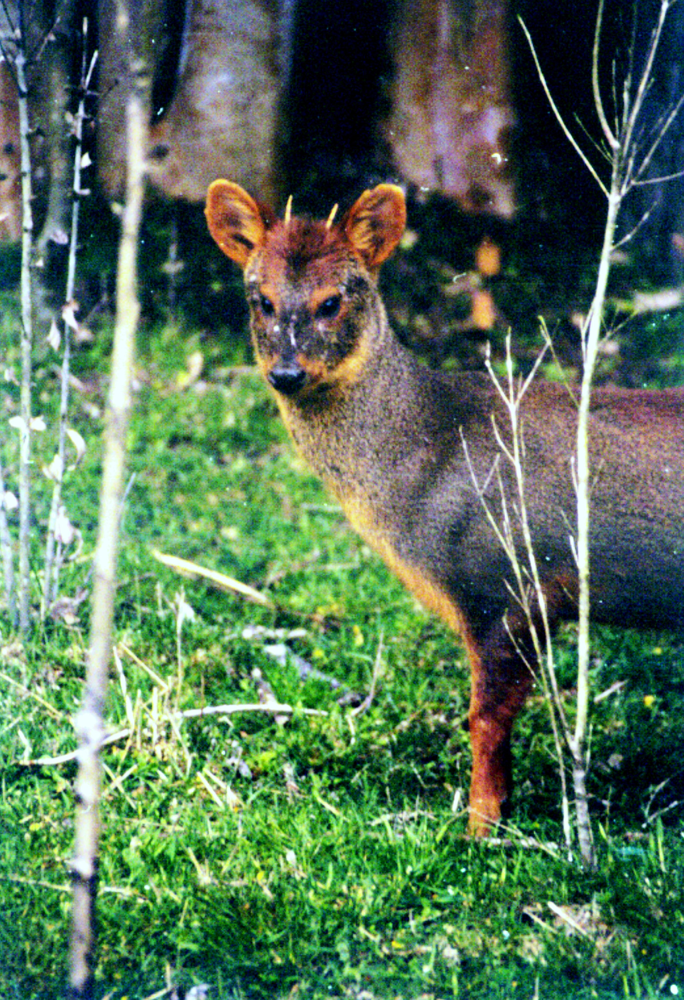
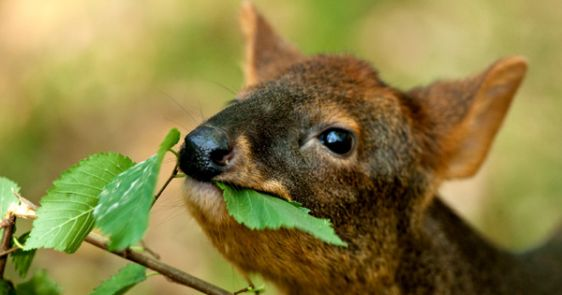
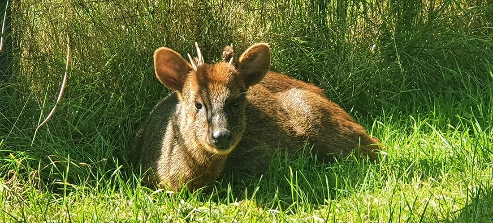

¿Quien es el Pudú?
El pudú es el venado mas pequeño del mundo, habitante de los bosques del sur de Chile y Argentina.



El venado mas pequeño del mundo
El pudú es el venado mas pequeño del mundo, habitante de los bosques del sur de Chile y Argentina.


